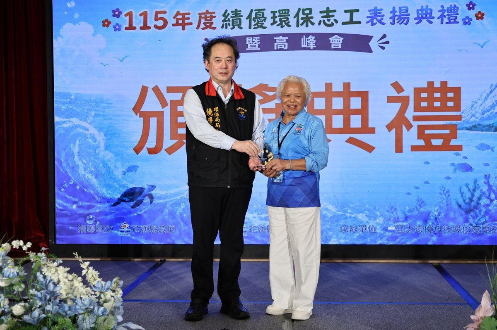

吉安環保志工獲特優殊榮 游淑貞陪同參加表揚高峰會

可樂電子報小編/編輯
吉安鄉表現亮眼，不僅榮獲團體組及個人組特優，更有9位志工獲頒優等獎，展現社區長年深耕環境保護的豐碩成果與團隊凝聚力。
鄉長游淑貞率領公所團隊及村長陪同獲獎志工接受花蓮縣長徐榛蔚及環保局長饒慶龍表揚，志工們身穿鄉公所致贈的新制服登台受獎，精神抖擻、士氣高昂。

其中，「花蓮縣吉安鄉環境保護發展協會」榮獲全縣僅5隊的團體組特優獎及歐曉儒獲個人組特優殊榮；此外，全縣40位優等志工中，吉安鄉就有9人獲獎，包含：光華社區發展協會黃信泰、宜昌社區發展協會羅素貞、南昌村環保志工隊潘採雲、永興村環保志工隊郭寶珠、光華城鄉發展協會魯台山、稻香社區發展協會徐瑜虹、福興社區發展協會吳鳳媛、慶豐銀髮福氣環保志工隊游素美以及吉安社區發展協會黃桂英。

吉安鄉近年積極推動資源回收、垃圾減量、低碳社區及環境綠美化，連續多年榮獲環境部資源回收分類及源頭減量優等獎，並取得低碳永續家園全國鄉鎮最高榮譽銀級認證，成為花蓮縣首個獲此肯定的鄉鎮；環境清潔競賽亦曾三度榮獲全縣第一名，環境治理成果備受肯定。

目前吉安鄉共29支環保志工隊、逾千位志工夥伴，不論晴雨寒暑，始終默默付出，以實際行動守護家園，成為地方最堅實的環保力量。